A1_table_survey_row
Survey table: enhance, then isolate one row
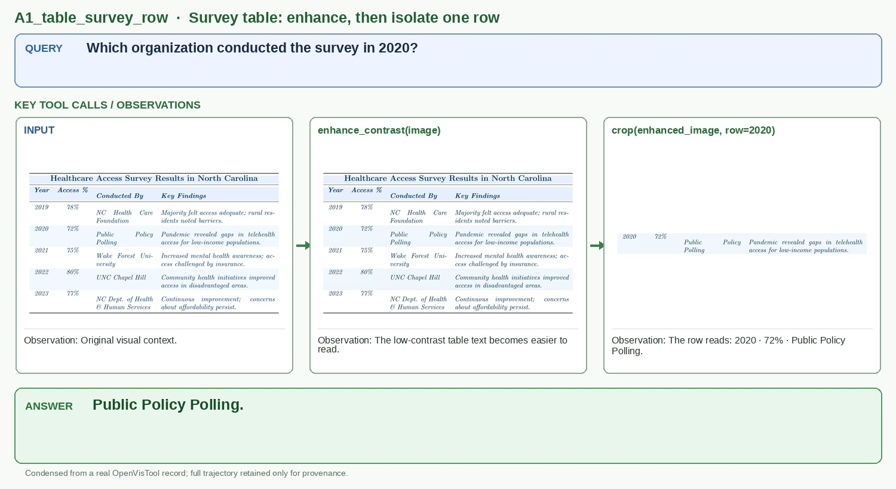
Query: Which organization conducted the survey in 2020?
Answer: Public Policy Polling.
调用链最干净：原表 → 对比度增强 → 目标行裁剪；问题和答案都短，适合在小版面讲清证据获取。
按 Query → 关键 Tool Call / Observation → Answer 组织；完整记录仅用于来源审计。
Survey table: enhance, then isolate one row

Query: Which organization conducted the survey in 2020?
Answer: Public Policy Polling.
调用链最干净：原表 → 对比度增强 → 目标行裁剪；问题和答案都短，适合在小版面讲清证据获取。
Sunburst chart: inspect multiple dense regions
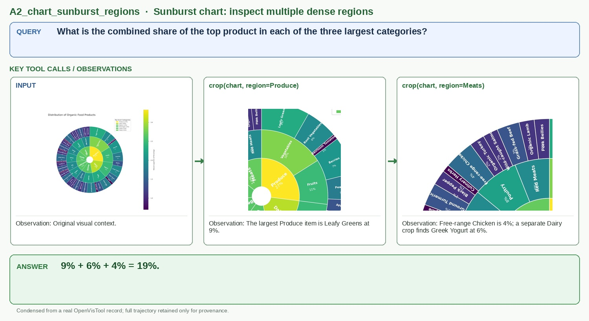
Query: What is the combined share of the top product in each of the three largest categories?
Answer: 9% + 6% + 4% = 19%.
色彩丰富且“整图 → 局部证据”的视觉关系非常直观；三次真实 crop 均保留在 media/。
Chart dashboard: acquire evidence from two subplots
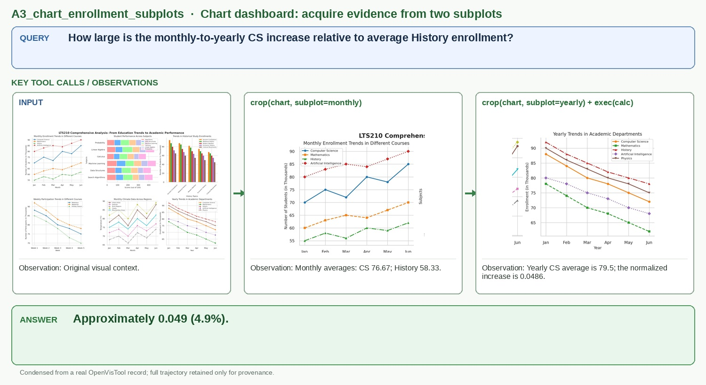
Query: How large is the monthly-to-yearly CS increase relative to average History enrollment?
Answer: Approximately 0.049 (4.9%).
能体现工具在多子图中分别获取证据，再进行数值计算的模式。
Social metrics table: compare two distant rows
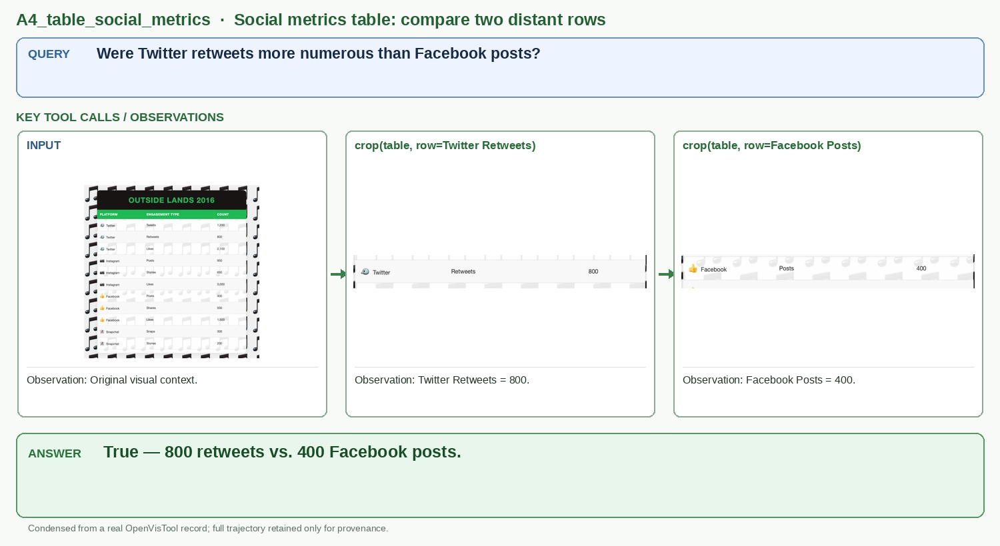
Query: Were Twitter retweets more numerous than Facebook posts?
Answer: True — 800 retweets vs. 400 Facebook posts.
问题简单，两个 crop 分别提供比较所需的数值，读者无需理解复杂背景。
Calendar GUI: localize and click “Edit Details…”
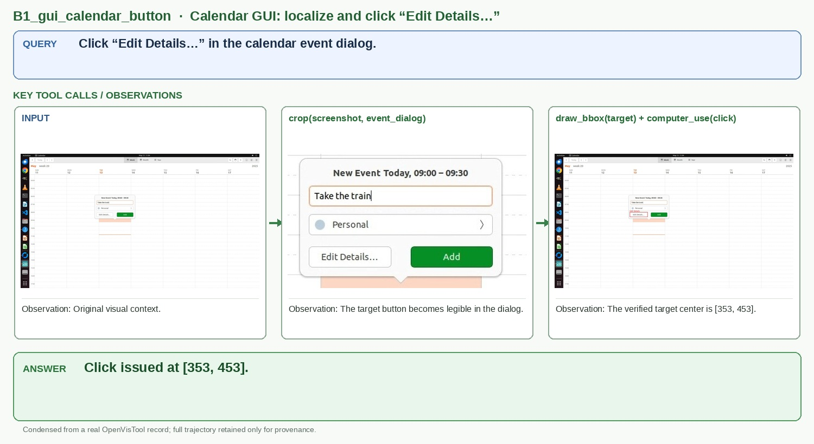
Query: Click “Edit Details…” in the calendar event dialog.
Answer: Click issued at [353, 453].
标准且完整的 crop → draw_bbox → computer_use 轨迹；目标按钮语义明确，截图干净。
Visual search: two-stage zoom to read a scarf

Query: What text appears on the dog’s scarf?
Answer: “FILTHY.”
从大场景到狗再到项圈文字的两级嵌套 crop 非常直观，缩略图下仍能看出证据逐步显现。
Visual search: zoom and mark four tea cups
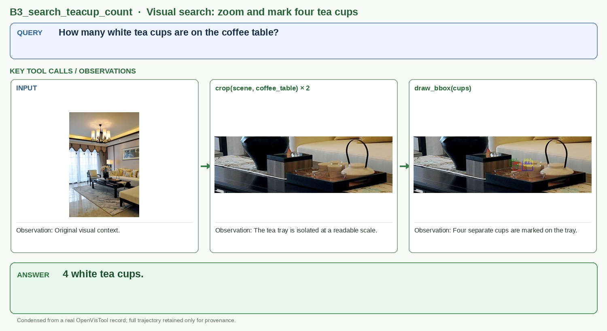
Query: How many white tea cups are on the coffee table?
Answer: 4 white tea cups.
最终证据图用四色 bbox 标出四个杯子，工具结果的用途一眼可见。
Writer GUI: localize the center-alignment button

Query: Click the center-alignment button in the formatting toolbar.
Answer: Click issued at [768, 183].
真实桌面应用、目标图标清楚，同样覆盖 crop → bbox → click 的典型模式。
Visual search: localize and count six bottles

Query: How many mineral-water bottles are on the mini-bar counter?
Answer: 6 mineral-water bottles.
crop 后的目标组清楚，最终六个红框很醒目；比纯文字读取更能体现定位工具。
Tech-company page: repair a narrow first render

Query: Recreate the reference tech-company webpage in HTML and CSS.
Answer: Final self-contained tech-company HTML/CSS returned.
初稿错误非常明显（页面被压成窄列），修订后恢复为接近参考图的横向布局；小尺寸也看得出变化。
Car-company page: fix layout and oversized media

Query: Recreate the reference car-company webpage in HTML and CSS.
Answer: Final self-contained car-company HTML/CSS returned.
红蓝绿和评论卡片让布局对应关系清楚；仅两次 render，调用链短。
Bookstore page: shrink placeholder and recover layout

Query: Recreate the reference bookstore webpage in HTML and CSS.
Answer: Final self-contained bookstore HTML/CSS returned.
初稿中的巨大占位图与修订后的布局差异明显，最终结果和参考截图结构非常接近。
Travel page: revise logo scale and section layout

Query: Recreate the reference travel-agency webpage in HTML and CSS.
Answer: Final self-contained travel-agency HTML/CSS returned.
蓝黄大色块在论文缩放后依旧清楚，初稿大占位图到最终布局的变化明显。
Grouped bars: isolate one year across all countries
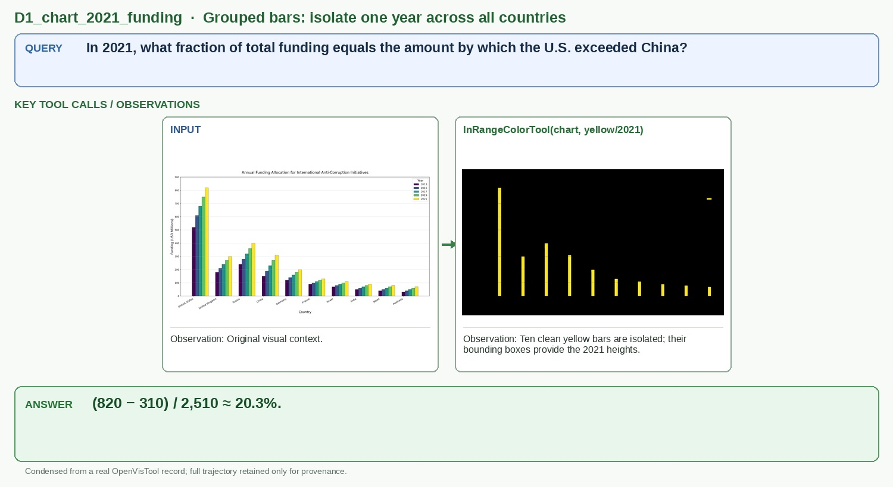
Query: In 2021, what fraction of total funding equals the amount by which the U.S. exceeded China?
Answer: (820 − 310) / 2,510 ≈ 20.3%.
单次颜色调用、输出最干净，黄色年度序列与问题直接对应；即使缩到论文尺寸也能看出十根柱子。
Stacked bars: split caloric levels by color
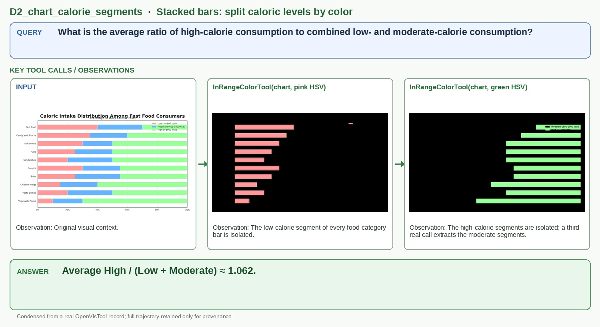
Query: What is the average ratio of high-calorie consumption to combined low- and moderate-calorie consumption?
Answer: Average High / (Low + Moderate) ≈ 1.062.
最典型的堆叠柱颜色分解：三次真实 HSV 调用分别取得 Low、Moderate、High，颜色掩膜与数值计算关系直观。
Grouped bars: separate three genres before comparison
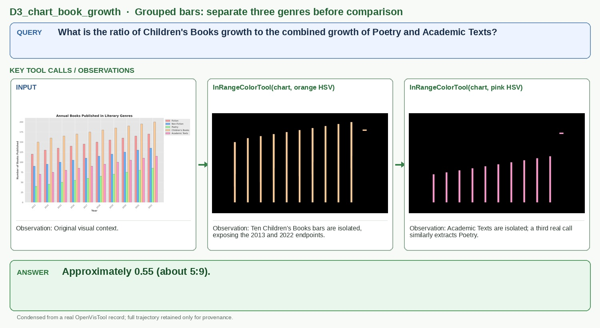
Query: What is the ratio of Children's Books growth to the combined growth of Poetry and Academic Texts?
Answer: Approximately 0.55 (about 5:9).
三种颜色序列都得到规整的十根柱，能清楚体现“分离序列 → 比较首尾增长 → 计算答案”。
Sunburst: isolate the dominant hierarchy by color
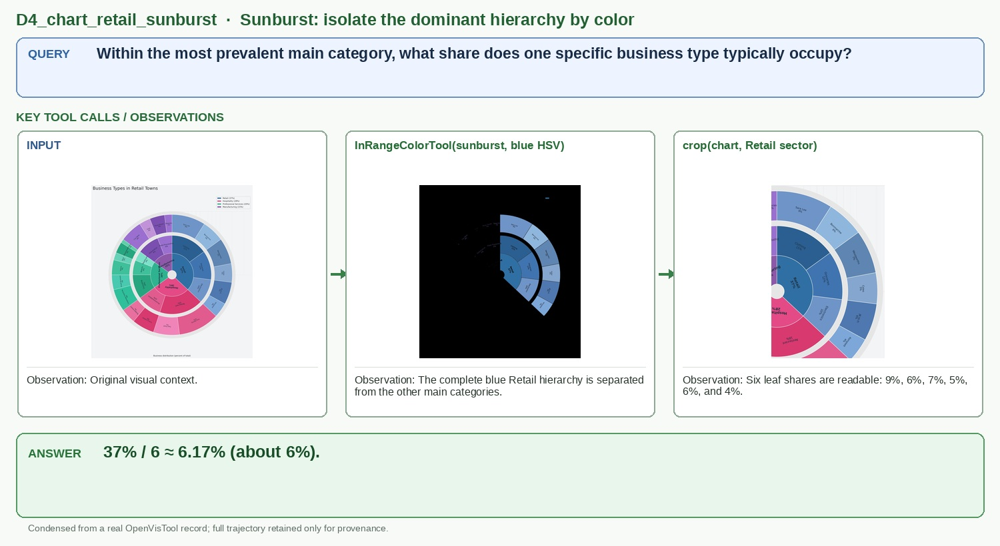
Query: Within the most prevalent main category, what share does one specific business type typically occupy?
Answer: 37% / 6 ≈ 6.17% (about 6%).
非柱状图案例且调用链只有两步，能展示颜色工具也可用于层级图中的语义区域隔离。
Stacked trend: measure one component of total growth
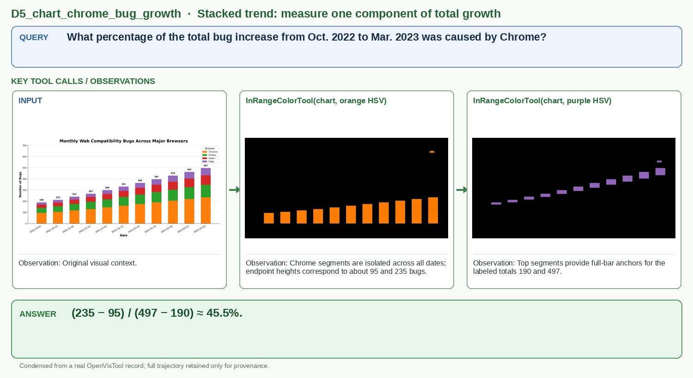
Query: What percentage of the total bug increase from Oct. 2022 to Mar. 2023 was caused by Chrome?
Answer: (235 − 95) / (497 − 190) ≈ 45.5%.
两个颜色 observation 都很干净，且直接支撑“局部增长占总增长比例”的像素测量。